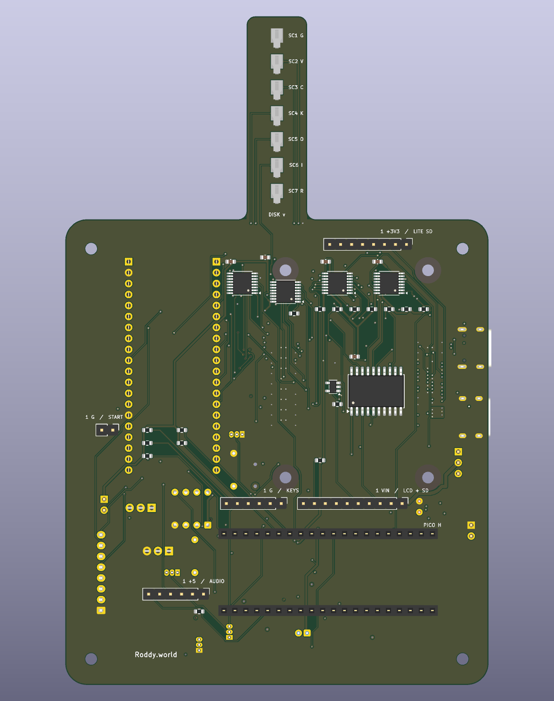
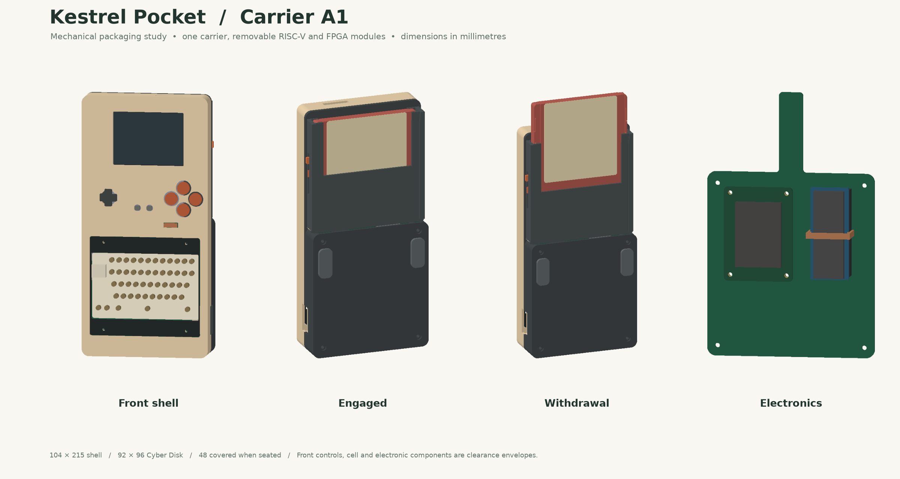

Kestrel Pocket A1
Archived mixed-assembly carrier with surface-mount components on the mainboard.

Shell & Cyber Disk
Rotate the 3D assembly
104 mmShell width
92 × 96 mmCyber Disk
48 mmDisk inside the receiver
The disk slides down the rear rails until both side latches engage. Squeeze the release buttons and slide it back up by hand. The label stays visible above the receiver.
Design files
Prototype cost and test results
Estimated single-unit base materials are $159.29, including the screen, controls and socketed Pico H. The Mars CM, Tang Nano 20K and battery are separate.
KiCad reported zero electrical rule violations, zero design rule violations and zero unrouted connections. The firmware and games have host test results. An assembled A1 still needs power, contact, display and gameplay tests.
The current display interface has a full-screen transfer ceiling of about 10 updates per second from Tang and 13 from Mars before overhead. The Tang launcher and Glide game have a flashable image. The A1 SNESTang port is available as source.